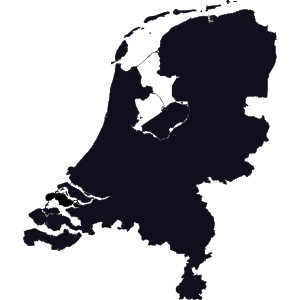

Rozdział 6 Do narodu
Piosenki do narodu
6.1 15 Miljoen Mensen, Fluitsma & Van Tijn
Land van duizend meningen
Het land van nuchterheid
Met z’n allen op het strand
Beschuit bij het ontbijt
Kraj tysiąca opinii
Kraj trzeźwych umysłów
Wszyscy razem na plaży
Sucharek na śniadanie
Het land waar niemand zich laat gaan
Behalve als we winnen
Dan breekt acuut de passie los
Dan blijft geen mens meer binnen
Kraj, gdzie nikt sobie nie odpuszcza
Chyba, że wygrywamy
Wtedy pasja się wyrywa
Wtedy nikt nie zostaje w domu
Het land wars van betutteling
Geen uniform is heilig
Een zoon die noemt z’n vader Piet
Een fiets staat nergens veilig
Kraj niechętny protekcji
Żaden mundur nie jest święty
Syn na ojca mówi Piotruś
Rower nigdzie nie jest bezpieczny
15 Miljoen mensen
Op dat hele kleine stukje aarde
Die schrijf je niet de wetten voor
Die laat je in hun waarde
15 milionów ludzi
Na tak małym skrawku ziemi
Którym nie dowodzisz
Którym pozwalasz być kim chcą
15 Miljoen mensen
Op dat hele kleine stukje aarde
Die moeten niet ’t keurslijf in
Die laat je in hun waarde
15 milionów ludzi
Na tak małym skrawku ziemi
Których nie trzeba zapinać w kaftan
Którym pozwalasz być kim chcą
Het land vol groepen van protest
Geen chef die echt de baas is
Gordijnen altijd open zijn
Lunch een broodje kaas is
Kraj pełen grup protestu
Nie ma szefa, który byłby bossem
Zasłony są zawsze otwarte
Lunch to kanapka z serem
Het land vol van verdraagzaamheid
Alleen niet voor de buurman
De grote vraag die blijft altijd
Waar betaalt ’ie nou z’n huur van
Kraj pełen tolerancji
Tylko nie dla sąsiada
Wielkie pytanie, które ciągle dręczy
Skąd on teraz bierze na czynsz
’t Land dat zorgt voor iedereen
Geen hond die van een goot weet
Met nasiballen in de muur
En niemand die droog brood eet
Kraj, który dba o wszystkich
Nie ma psa, który znałby rynsztok
Z kulkami Nasi w ścianie
I nikogo, kto jadłby suchy chleb
- Zijn mening is waardeloos. Jego opinia jest bezwartościowa.
- Ik ben al negen jaar nuchter. Jestem trzeźwy od dziewięciu lat.
- We moeten wat leuks gaan doen met z’n allen. Musimy iść wszyscy razem trochę się zabawić.
- Je moet er op los leven. Musisz żyć z dnia na dzień.
- Alsjeblieft, breek los. Proszę cię, wyrwij się z tego.
- Onze buren zijn wars van contact. Nasi sąsiedzi są niechętni do kontaktu.
- Open de deur, laat me in! Otwórz te drzwi, wpuść mnie do środka!
- Dat is echt iets voor hem. To jest naprawdę coś dla niego.
- Piet liegt altijd over de weersvoorspellingen. Piotruś zawsze kłamie na temat prognozy pogody.
- De nasiballen zijn van rijst gemaakt. Kulki nasi są wykonane z ryżu.
- Iemand de wet voorschrijven. Dowodzić kimś.
- Iemand in zijn waarde laten. Akceptować kogoś jakim jest.
6.2 Het land van…, Lange Frans & Baas B.

Het land van… (Frans, B, and Tuinfort 2005) [Kraj pochodzenia] to gniewna litania z wadami i zaletami życia w Holandii. Osobiście zabrakło mi tylko sera, małżeństw jednopłciowych, wiatraków i … Polaków.
Ah …
Kom uit het land van Pim Fortuyn en Volkert van der G.
Het land van Theo van Gogh en Mohammed B.
Kom uit het land van kroketten, frikadellen
Die je tot aan de Spaanse kust kunt bestellen
Kom uit het land waar ‘’Air Max’’ nooit uit de mode raken
Waar ze je kraken op het moment dat je het groot gaat maken
Kom uit het land van rood-wit-blauw en de gouden leeuw
Ach …
Pochodzę z kraju Pima Fortuin i Volkerta van der G.
Z kraju Theo van Gogha i Mohammeda B.
Pochodzę z kraju krokietów, frykadeli
Które można zamówić aż do wybrzeża Hiszpanii
Pochodzą z kraju, w którym Air Max nigdy nie wychodzi z mody
W którym cię łamią w momencie, gdy zamierzasz z tego zrobić wielką sprawę
Pochodzę z kraju czerwieni, bieli i błękitu oraz złotego lwa
Plunderen de wereld, dat noemen we de Gouden Eeuw
Kom uit het land van wietplantage’s en fietsvierdaage’s
Het land waar je een junkie om een fiets kan vragen
Het land dat kampioen werd in ‘88
Het land van haring happen, dijken en grachten
Kom uit het land van, het land van Lange Fransie
Dit is het land waar ik thuis kom na vakantie
Plądrowanie świata, to nazywamy Złotym Wiekiem
Pochodzę z kraju plantacji konopi i czterodniowych wycieczek rowerowych
Z kraju, w którym możesz poprosić ćpuna o rower
Z kraju, który został mistrzem w ‘88
Z kraju, przekąszania śledzia, wałów i kanałów
Pochodzę z kraju, kraju Lange Franusia
To kraj, do którego wracam do domu z wakacjach
Ah …
Kom uit het land waar ik in 1982 geboren ben
Waar ik met guldens aan de euro verloren ben
Het land dat meedoet aan de oorlog in Irak
Want ome Bush heeft Balkenende in zijn zak
Het land van gierig zijn, een rondje geven is te duur
De vette hap van de ‘’Febo’’ trek je uit de muur
Het land van rellen tussen Ajax en Feyenoord
Ach …
Pochodzę z kraju, w którym się urodziłem w 1982 roku
W którym wytraciłem swoje guldeny na euro
Z kraju, który bierze udział w wojnie w Iraku
Bo wujek Bush ma Balkenende w kieszeni
Kraj bycia skąpym, polanie jednej kolejki jest zbyt drogie
Tłuste przekąski z „Febo” wyciągasz ze ściany
Kraj zamieszek pomiędzy Ajaxem i Feyenoordem
Maar wanneer Oranje speelt iedereen erbij hoort
Het land van Johan Cruijff en Abe Lenstra
Het legioen laat de leeuw niet in zijn hemd staan
Het land waar we elke dag hopen op wat beter weer
Die Piet Paulusma vertrouw ik voor geen meter meer
Het land dat vrij is sinds ‘45
Het land waar ik blijf vind het er heerlijk
Ale kiedy grają pomarańczowi, wszyscy są razem
Z kraju Johana Cruijffa i Abe Lenstry
Ten legion nie pozwala lwu zostać w samej koszuli
Z kraju, w którym każdego dnia mamy nadzieję na lepszą pogodę
Temu Pietowi Paulusmie nie wierzę już ani krzty więcej
Z kraju, który jest wolny od ‘45
Z kraju, w którym mieszkam, uwielbiam go
Eerlijk?
Szczerze?
Ah …
Kom uit het land waar je door heen rijdt in 3 uurtjes
Met een ander dialect elke 10 minuutjes
Kom uit het land waar op papier een plek voor iedereen is
En XTC, export nummer 1 is
Kom uit het land waar André Hazes over 100 jaar in elk café nog steeds de baas is
Kom uit het land waar Peter, Gert-Jan, Raymond en Junte, Frans, Bart en Ali de game runnen
Kom uit het land waar hiphop een kind van 30 is
Ach …
Pochodzę z kraju, przez który przejedziesz w 3 godzinki
Z innym dialektem co każde 10 minut
Pochodzę z kraju, w którym na papierze jest miejsce dla wszystkich
A ekstazy to eksportowy numer 1
Pochodzę z kraju, w którym André Hazes od stu lat nieustannie każdej kawiarni szefuje
Pochodzę z kraju, w którym Peter, Gert-Jan, Raymond oraz Junte, Frans, Bart i Ali prowadzą grę
Pochodzę z kraju, w którym Hip-hop jest trzydziestoletnim dzieckiem
En je mag zelf in gaan vullen hoe vet dat is
Het land waar als je rijk wordt je zoveel inlevert
En dat je bij jezelf denkt, hoeveel zin heeft het?
Het land waar prostitutie en blowen mag
Het land van Sinterklaas en Koninginnedag
Dit is het land waar ik verloren heb, bedrogen ben
Kom uit het land waar ik geboren en getogen ben
Możesz sobie sam wpisać, jakie jest tłuste
Z kraju, w którym im bardziej się bogacisz, tym więcej oddajesz
I tak się samemu zastanawiasz, ile to ma sensu?
Z kraju, w którym prostytucja i palenie trawy są dozwolone
Kraj Świętego Mikołaja i Dnia Królowej
To jest kraj, w którym coś straciłem, w którym byłem oszukany
Pochodzę z kraju, w którym się urodziłem i wychowałem
Ah …
Kom uit het land met de meeste culturen per vierkante meter
Maar men is bang om bij de buren te gaan eten
En ‘’Integratie’’ is een schitterend woord
Maar shit is focking bitter wanneer niemand het hoort
Ik deel mijn land met Turken en Marokkanen, Antillianen, Molukkers en Surinamers
Het land waar we samen veel te veel opkroppen
En wereldwijd gerepresenteerd zijn door Harry Potter
Ach …
Pochodzę z kraju o największej liczbie kultur na metr kwadratowy
Ale ludzie boją się jeść u sąsiadów
A “Integracja” to piękne słowo
Ale kurwa, aż skręca, że nikt go nie słyszy
Dzielę swój kraj z Turkami i Marokańczykami, Antylczykami, Molukami i Surinamczykami
Z kraju, w którym o wiele za mocno się razem upychamy
I który jest reprezentowany na całym świecie przez Harry’ego Pottera
Het land waar ‘’Apartheid’’
Internationaal het meest bekende woord is uit de Nederlandse taal
Kom uit het land dat tikt als een tijdbom
Het land dat eet om 6 uur en ook nog eens op tijd komt
Dit is het land waar ik zal overwinnen aan het einde
Totdat je deze meezingt aan de ArenA lijnen
En tot die tijd zal ik schijnen ik heb mijn hart verband
Z kraju, w którym “Apartheid”
Jest na całym świecie najlepiej rozpoznawanym słowem pochodzącym z języka niderlandzkiego
Pochodzę z kraju, który tyka jak bomba zegarowa
Z kraju, który je o 6 i do tego jeszcze przychodzi się na czas
To jest kraj, w którym w końcu zwyciężę
Dopóki tego razem ze mną nie zaśpiewasz na trybunach ArenA
I do czasu kiedy zabłysnę zabandażowałem moje serce
Dit is voor Nederland
Baas B
Lange Frans
To do Holandii
Baas B
Lange Frans
- Pim Fortuyn (Nederlandse politicus) en Theo van Gogh (filmregisseur) en hun respectievelijke moordenaars Volkert van der G. en Mohammed B. Pim Fortuyn (holenderski polityk) i Theo van Gogh (reżyser) i odpowiednio ich mordercy Volkert van der G. i Mohammed B.
- Doorzwemmen tot je aan je grens zit. Płyń, aż osiągniesz swój limit.
- Mijn vader gaat een wandeling maken in het park. Mój ojciec idzie na spacer po parku.
- Het rood-wit-blauw van de vlag van Nederland. Kolory czerwono, biały i niebieski na fladze Holandii.
- De gouden leeuw van het wapen van het Koninkrijk der Nederlanden. Złoty lew z herbu Królestwa Niderlandów.
- Lange Frans en Baas B schreef dit nummer. Lange Frans, Baas B schreef dit nummer.
- Jan Peter Balkenende is de voormalige premier van Nederland. Jan Peter Balkenende jest byłym premierem Holandii.
- Het maakt niet uit. To nie ma znaczenia.
- Dit hele ding is gewoon helemaal gek. Cała ta sprawa jest po prostu zupełnie szalona.
- Hij zal morgen toch wel weer gaan drinken. W każdym razie jutro będzie pił znowu.
- ‘’Ajax’’ en ‘’Feyenoord’’ zijn Nederlandse profvoetbalclubs, terwijl ‘’Oranje’’ het Nederlands voetbalelftal is. „Ajax” i „Feyenoord” to holenderskie profesjonalne kluby piłkarskie, a „Oranje” to holenderska drużyna narodowa.
- Ze horen bij mij. Oni są ze mną.
- Bekende Nederlandse voetballers zijn Johan Cruijff (met rugnummer 14) en Abe Lenstra. Znani holenderscy piłkarze to Johan Cruijff (z koszulką nr 14) i Abe Lenstra.
- Piet Paulusma is een Nederlandse weerman. Piet Paulusma to holenderski prezenter pogody.
- Ik haat je nog steeds. Nadal cię nienawidzę.
- André Hazes was een populaire Nederlandse zanger. André Hazes był popularnym holenderskim piosenkarzem. 4.6
- Peter, Gert-Jan, Raymond, Junte, Frans, Bart en Ali zijn de namen van Nederlandse rappers: Delic, Brainpower, Kid Ray, Sticky Steez, Lange Frans, Baas B en Ali B. Peter, Gert-Jan, Raymond, Junte, Frans, Bart i Ali to imiona holenderskich raperów: Delic, Brainpower, Kid Ray, Sticky Steez, Lange Frans, Baas B i Ali B.
- Invullen in hoofdletters Wpisz wielkimi literami.
- Ik heb/ben mijn portemonnee verloren. Zgubiłem portfel.
- Ik ben bedrogen door jou, Zostałem przez ciebie oszukany.
- Het heeft geen zin om zo’n smoes te gebruiken. Nie ma sensu używać takiej wymówki.
- Ik had veel te veel gedronken. Wypiłem dużo za dużo.
- Moet ze haar emoties dan opkroppen? Czy powinna zatem zebrać swoje emocje?
- J. C. M. van Riemsdijk (Nederlandse muzikant en schrijver) is een authentiek personage uit de Harry Potter-films.J. C. M. van Riemsdijk (holenderski muzyk i pisarz) to autentyczna postać z filmów o Harrym Potterze.
References
Fluitsma, Jochem, Eric van Tijn, and Frank Pels. 1996. 15 Miljoen Mensen. https://youtu.be/iOxYmMNOE-o.
Frans, Lange, Baas B, and Giorgio Tuinfort. 2005. Het Land Van... https://youtu.be/yayMuZxlttc.